57 Cortical Flattening and the Marching Cubes Algorithm
Suggestions of all kinds for these lecture notes are welcome — whether it’s fixing small errors, raising bigger questions, or offering new perspectives. Please share comments through GitHub Issues. To make feedback easier to address, please point to the section you have in mind — by section number or a short snippet of text.
The previous chapter built a 3D mesh representation of the cortical surface and introduced flat maps as a way to display data on that surface. This chapter works through the two computational methods that make that possible: flattening, which maps the 3D mesh onto a 2D plane, and marching cubes/marching squares, the general algorithm for extracting a surface (or a boundary curve, in 2D) from classified volumetric data in the first place.
57.1 Flattening the cortical surface
Gray-matter nodes on the cortical mesh have 3D positions \((x, y, z)\); the goal of flattening is to assign each node a 2D position \((u, v)\) in an image plane while preserving, as much as possible, the neighborhood relations of the original mesh. The method used here follows a principle developed by W.T. Tutte (1960): place each node at the average position of its connected neighbors, and no folds are introduced into the surface this way (Figure 57.1; Tutte (1963)).
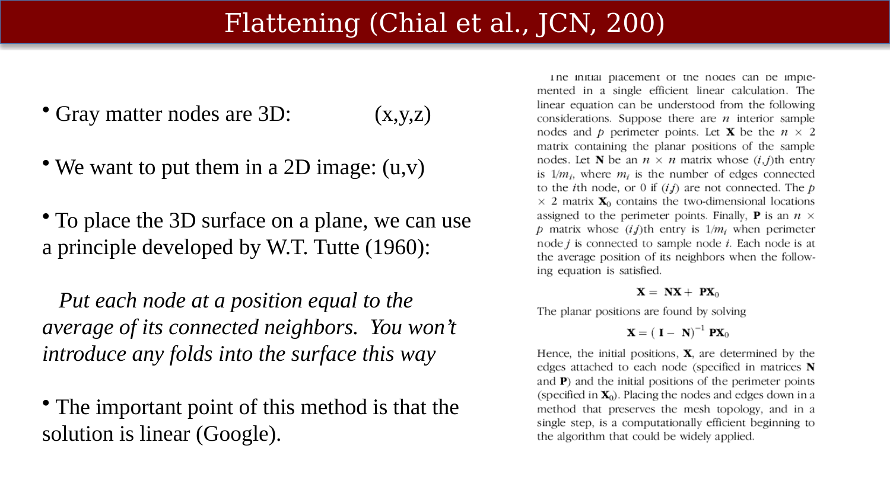
The important practical point is that this averaging condition is a linear system. If \(\mathbf{X}\) holds the 2D positions of the interior nodes and \(\mathbf{X}_0\) the fixed positions of the perimeter nodes, the condition that each interior node sits at the average of its neighbors is written \(\mathbf{X} = \mathbf{N}\mathbf{X} + \mathbf{P}\mathbf{X}_0\), where \(\mathbf{N}\) is a node-connection matrix (normalized by each node’s number of connections) and \(\mathbf{P}\) plays the same role for perimeter connections. Solving for \(\mathbf{X}\) gives \(\mathbf{X} = (\mathbf{I} - \mathbf{N})^{-1} \mathbf{P}\mathbf{X}_0\) — a single linear solve places every interior node at once, in a way that preserves the mesh’s topology (Figure 57.2).
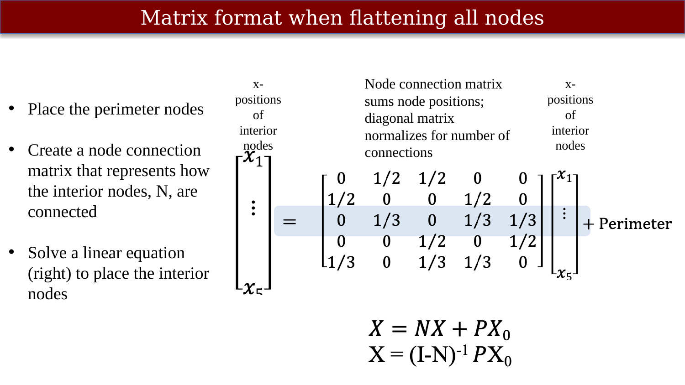
In practice, once a segmentation exists, flattening a patch of cortex is straightforward: select a start point on the mesh, select a distance (radius) defining how much of the mesh to unfold, and run the algorithm (Figure 57.3). Tools such as mrFlatMesh implement this directly: they read in the gray-matter mesh, take a start point and a radius, and solve the flattening equations (Figure 57.4).
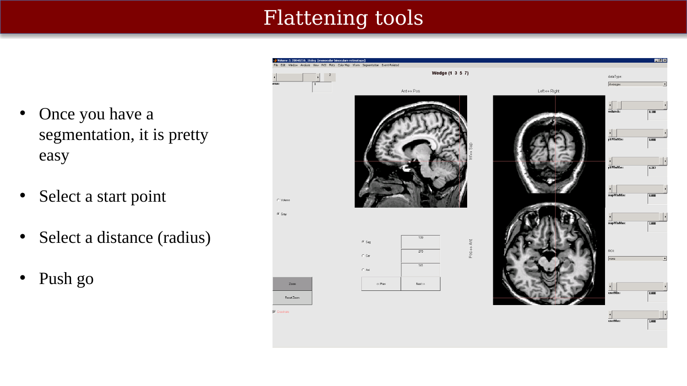
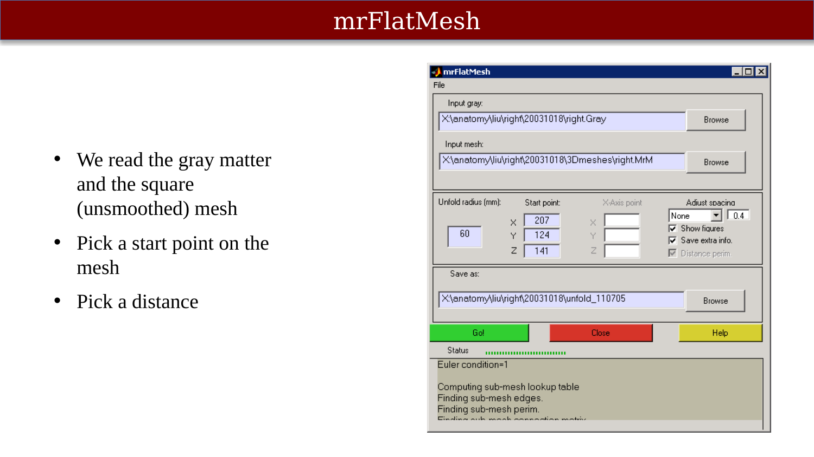
mrFlatMesh: a graphical tool for flattening a patch of the gray-matter mesh.
The result can be inspected directly: the mesh triangles end up on the plane without any edge crossings, confirming the flattening is valid, though the triangles are not uniformly positioned across the flattened patch (Figure 57.5). Two further quantities are typically computed and displayed alongside the flattened mesh: a manifold distance map (geodesic distance from the starting point, measured along the original surface) and a curvature map, which together let a viewer judge how much the flattening has distorted the true surface (Figure 57.6).
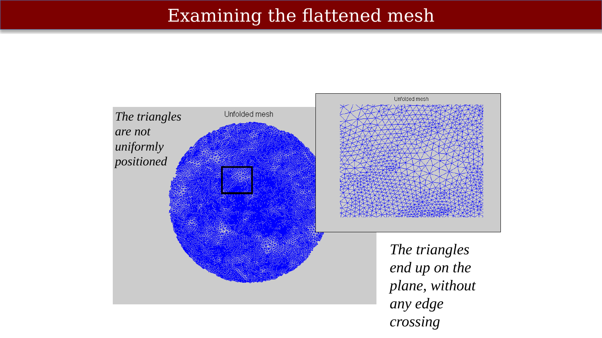
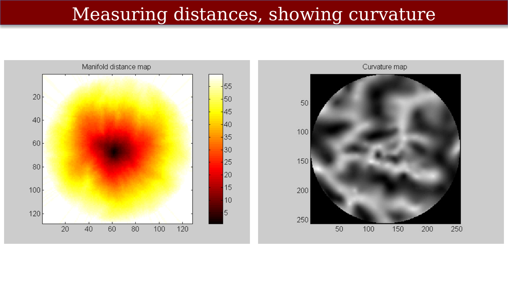
57.2 Marching squares: finding a boundary curve
Both flattening and mesh construction depend on a more basic operation: extracting a boundary (in 2D) or a surface (in 3D) from a classified grid of samples. In two dimensions this is the marching squares algorithm. Each grid node is classified as inside or outside the shape (green vertices inside, in this illustration); new vertices are placed at the midpoint of each in/out pair of neighboring grid nodes (red), and the boundary is drawn through those new vertices.
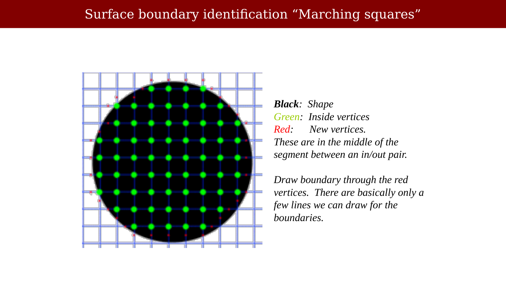
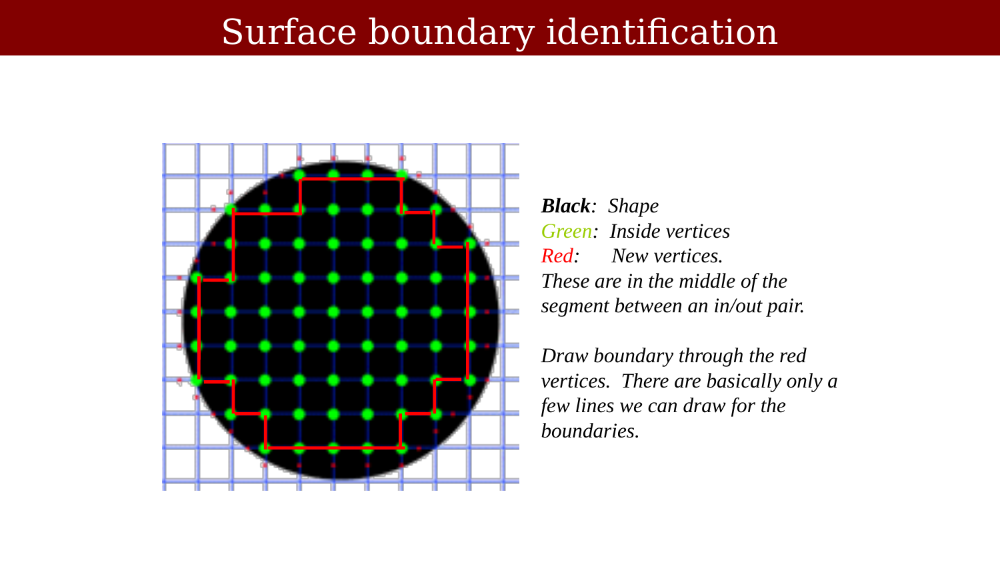
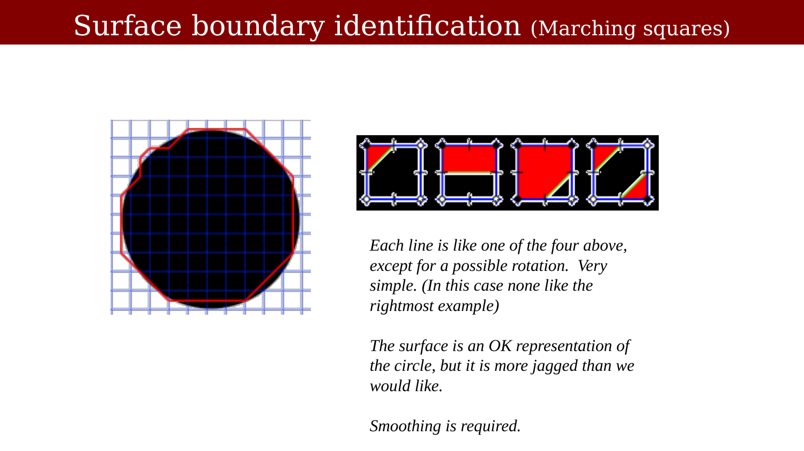
The result is an “OK” but visibly jagged representation of the true boundary — the polygon approximation is more angular than the underlying shape, so some form of boundary smoothing is required. One simple approach: find the curve normals at each vertex, smooth the way their orientation changes along the curve, and reconstruct the curve from the smoothed normals (Figure 57.10).
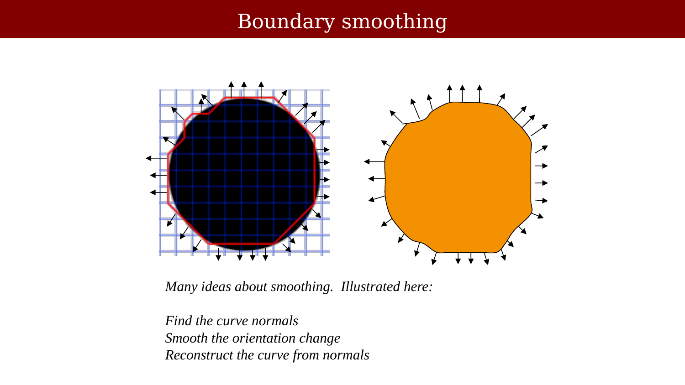
57.3 Marching cubes: finding a surface in 3D
Marching cubes is the natural three-dimensional generalization of marching squares, and it is the standard algorithm for extracting a surface mesh from a classified 3D volume such as a segmented gray/white matter volume (Lorensen & Cline (1987)). Each cube (formed by eight neighboring voxel corners) has its corners classified as above or below an isovalue; since there are 8 corners, there are \(2^8 = 256\) possible corner classifications, and the algorithm must determine which section (or sections) of surface divides each cube accordingly.
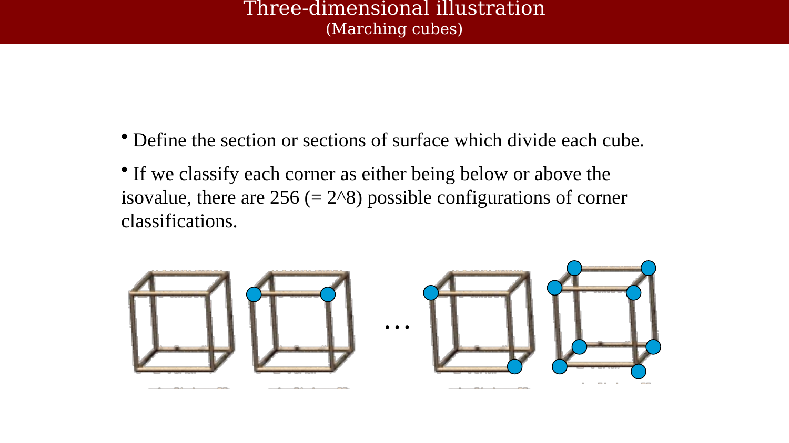
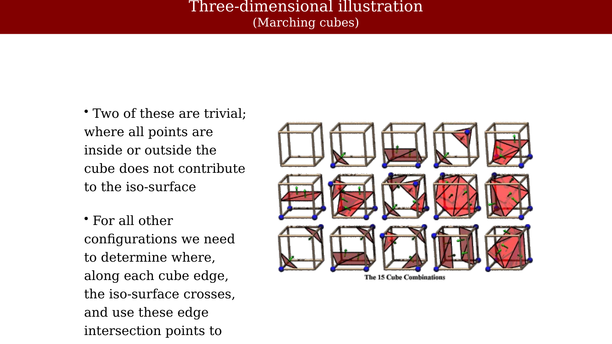
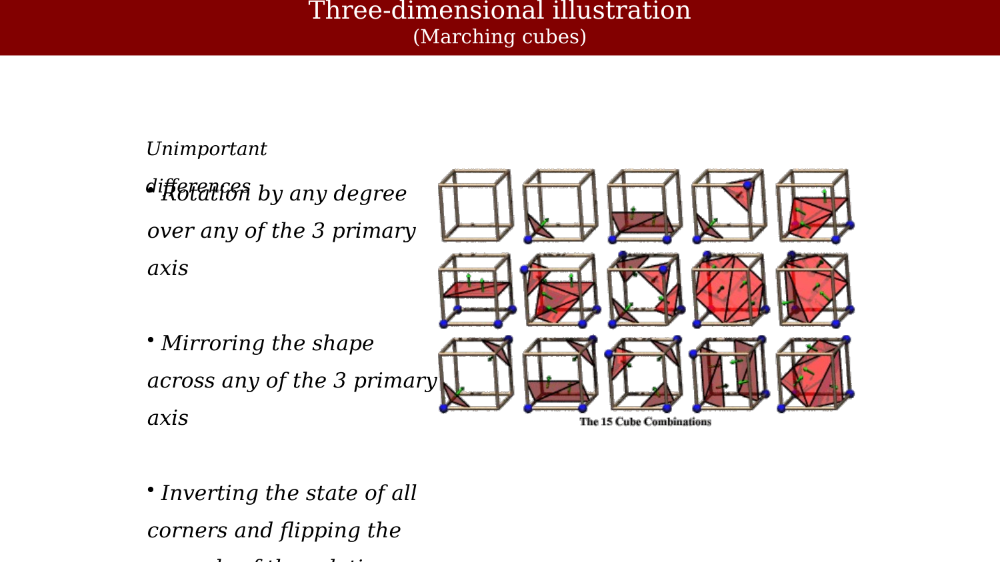
Increasing the point-sampling density improves the smoothness of the resulting mesh but does not, by itself, solve the fundamental jaggedness problem — the surface is still built from flat triangular facets, just more of them (Figure 57.14).
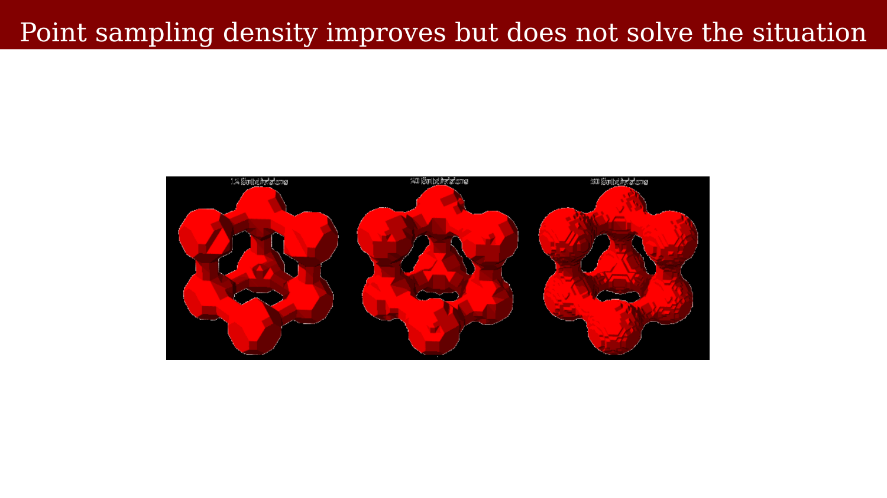
57.4 Connectivity, revisited
Both marching squares and marching cubes depend on a definition of neighborhood connectivity among voxels, the same issue raised in the previous chapter’s discussion of white-matter topology. In 3D, the two common conventions are 6-connectivity (only face-adjacent neighbors) and 26-connectivity (all face-, edge-, and corner-adjacent neighbors) (Figure 57.15). The choice of connectivity convention affects which configurations are treated as topologically valid and is part of why the Euler-number bookkeeping introduced earlier matters in practice, not just in principle.
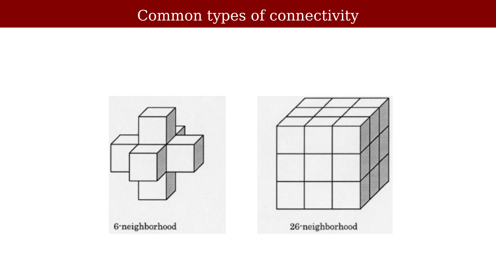